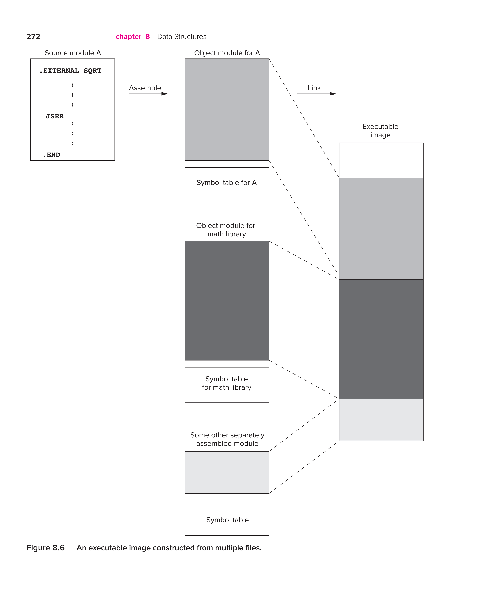

Introduction to Computing Systems
Digital Logic Structure
Combinational Logic Circuits
These structures do not store information, and they are sometimes referred to as decision elements.
Their outputs are not at all dependent on the past history of information that is stored internally, since no information can be stored internally in a combinational logic circuit.
Three useful circuits: a decoder, a mux, a one-bit adder.
Decoder (n-2^n)
A decoder has the property that exactly one of its outputs is 1 and all the rest are 0s. In general, decoders have n inputs and 2^n outputs.
One implementation: when interpret the opcode, A 4-to-16 decoder is used to identify what work is to be performed by each instruction.
Mux (n-1)
The function of a mux is to select one of the inputs and connect it to the output. The select signal determines which inputs is connected to the output.
In general, a mux consists of 2^n inputs and n select lines.
One-Bit Adder (FA)
\(Si = Ai \oplus Bi \oplus Ci\)
\(C_{i+1} = A_i B_i + B_iC_i + A_iC_i\)
The difference between a full adder and a half adder is the carry bit. The half adder depends on only two inputs, while the full adder depends on three inputs.
The Programmable Logic Array (PLA)
It is a very common building block for implementing any collection of logic functions one wishes to implement. It consists of an array of an AND array followed by an OR array.
For n-inputs logic functions, we need a PLA with 2^n n-input AND gates. The number of OR gates corresponds to the number of logic functions we wish to implement.
Logical Completeness
If we say a set of gates, for example, {AND, OR, NOT}, is logically complete, then we can build a circuit to carry out the specification of any truth table we wish without using any other kind of gate.
Basic Storage Elements
Now we are ready to discuss logic structures that do include the storage of information.
The R-S Latch
The Quiescent State: when the latch is storing a value, either 0 or 1, and noting is trying to change the value.
This is the case when inputs S and R both have the logic value 1. But it is illegal to set both S and R to 0.
We use the term set to denote setting a variable to 0 or 1, and the term clear to denote the act of setting a variable to 0.
The Gated D Latch
It consists of the R-S latch, plus two additional NAND gates that allow the latch to be set to the value of D, but only when WE is asserted.
The Concept of Memory
Memory is made up of a number of locations, each uniquely identifiable and each having the ability to store a value.
Address: the unique identifier associated with each memory location.
Address Space: the total number of uniquely identifiable locations.
Addressability: the number of bits of information stored in each location.
Address Space
With n bits of address, we can uniquely identify 2^n memory locations.
Addressability
Most memorise are byte-addressable. If the memory is byte-addressable, then each ASCII character occupies one location in memory. Uniquely identifying each byte of memory allows individual bytes of stored information to be changed easily.
Many computers that have been designed specifically to perform large scientific calculations are 64-bit addressable. That is due to the fact that numbers used in scientific calculations are often represented as 64-bit floating-point quantities.
Sequential Logic Circuits
In this section, we discuss digital logic structures that can both process information and store information. That is, these structures base their decisions not only on the input values now present, but also on what has happened before. The output can be dependent on both the inputs now and the values stored in the storage elements.
Sequential logic circuits are used to implement a very important class of mechanisms called finite state machines.
The Concept of State
The state of a system is a snapshot of <span alt="solid">all the relevant elements of the system at the moment the snapshot is taken.
The FSM and its State Diagram
A FSM consists of five elements:
- a finite number of states
- a finite number of external inputs
- a finite number of external outputs
- an explicit specification of all state transitions
- an explicit specification of what determines each external output value
We refer to the state the system is coming from as the current state, and the state it is going to as the next state.
The output of Mealy type sequential logic circuit depends on both the current state and the value of the external input, while Moore type depends on only the current state.
The Synchronous Finite State Machine
Most computers are synchronous because the state transitions take place, one after the other, at identical fixed units of time. The are controlled by a synchronous FSM.
A Problem with Gated Latches as Storage Elements
A gated D latch changes immediately in response to its input if the WE signal is asserted, so it cannot the storage element for our synchronous FSM. (Because we have no idea what the state of the FSM would be for next clock cycle and even in the current clock cycle, the state of the storage elements would change.)
We need storage elements that allow us to read the current state throughout the current clock cycle, and not write the next state values into the storage elements until the beginning of the next clock cycle.
The Flip-Flop
Our requirement is, the function to be performed during a single clock cycle involves reading and writing a particular variable. Reading must be allowed throughout the clock cycle, and writing must occur at the end of the clock cycle.
A flip-flop can accomplished that. The master/slave flip-flop can be constructed out of two gated D latches. And the WE of the master is 1 when the clock is 0, and the WE of the slave is 1 when the clock is 1. (clk posedge)
$ t_{clk} > t_{ffpd} + t_{nspd} + t_{setup} $
At the start of each clock cycle, the output is the output of the slave latch. After the propagation delay of the combinational logic, the next state is produced but cannot be written into the master latch, since the WE to the master latch is 0.
At the start of the second half cycle, the clock signal is 0, which means the WE of the master latch is 1, and the master latch can be written. However, during this half cycle, the WE of the slave latch is 0, so the slave latch cannot write the new information now stored in the master latch.
At the start of the next clock cycle, the WE to the slave latch is 1, so the slave latch can store the next state value was created by the combinational logic during the last clock cycle.
Since the WE of the master latch is 0 now, the state of the master latch cannot change. Although the WE of the slave latch is 1, the latch do not change because the master latch cannot change.
The slave's output changes at the start of the clock cycle, and does not change again during the clock cycle.
Now we conclude the reason: During the half-cycle A, the master latch cannot change, so the slave latch continue to see the state information that is the current state for the new clock cycle. During the half-cycle B, the slave latch cannot change because its WE is 0. Meanwhile, during the half-cycle B, the master latch can store the next state information produced by the combinational logic, but it cannot write it into the slave latch until the start of the next clock cycle, when it becomes the state information of the next state.
The von Neumann Model
Basic Components
instruction: the smallest piece of work specified in a computer program.
The von Neumann Model consists of five parts: memory, a processing unit, input, output, and a control unit.
The computer program is contained in the computer's memory. The data the program needs to carry out the work of the program is either contained in the program's memory or is obtained from the input devices. The results of the program's execution are provided by the output devices. The order in which the instructions are carried out is performed by the control unit.
Memory
We access memory by providing the address from which we wish to read, or to which we wish to write.
To read the contents of a memory location, we first place the address of that location in the memory's address register (MAR) and then interrogate the computer's memory. The information stored in the location having that address will be placed in the memory's data register (MDR).
To write a value in a memory location, we first write the address of the memory in the MAR, and the value to be stored in MDR. We the interrogate the computer' memory with the WE asserted. The information contained in the MDR will be written into the memory location whose address is in the MAR.
The value stored in each memory location can be changed, but the location's memory location remains unchanged.
Processing Unit
The actual processing of information in the computer is carried out by the processing unit.
The simplest processing unit is the ALU (Arithmetic and Logic Unit). The ALU normally processes data elements of a fixed size referred to as the word length of the computer. The data elements are called words. We say the LC-3 has a word length of 16 bits.
Since the time it takes to access memory is long compared to the time it takes to perform the ADD or MUL, almost all computers have temporary storage for storing the result in order to avoid the much longer access time. And the most common form is a set of registers. Typically, the size of each register is identical to the size of values processed by the ALU.
Input and Output
They are generically referred to in computer jargon as peripherals.
For input, keyboard, mouse, digital scanners and shopping mall kiosks.
For output, monitor, printers, LED displays, disks and shopping mall kiosks.
Control Unit
The CU keeps track of both where we are within the process of executing the program and where we are in the process of each instruction.
To keep track of which instruction is being executed, the CU has an instruction register to contain that instruction. To keep track of which instruction is to be executed next, the CU has a register that contains the next instruction's address, which is called program counter.
The LC-3: An Example von Neumann Machine
Instruction Processing
The Instruction
The most basic unit of computer processing is the instruction. It is made up of two parts, the opcode and the operands.
The Instruction Cycle
The entire sequence of steps needed to process an instruction is called the instruction cycle. It consists of six phases, each phase requiring zero or more steps.
FETCH -> DECODE -> EVALUATE ADDRESS -> FETCH OPERANDS -> EXECUTE -> STORE RESULT
FETCH
- Load MAR with the contents of the PC, and simultaneously increment the PC.
- Interrogate memory, resulting in the instruction being placed in the MDR.
- Load the IR with the contents of the MDR.
Step 1 takes one clock cycle. Step 2 takes one or many clock cycles. Step 3 takes one clock cycle.
DECODE
Input is the four-bit opcode IR[15:12]. The output line asserted is the one corresponding to the opcode at the input. Depending on which output of the decoder is asserted, the remaining 12 bits identify what else is needed to process the instruction.
尤其是取寄存器T_T
EVALUATE ADDRESS
This phase computes the address of the memory location that is needed to process the instruction.
For example, for LD, it causes a value stored in memory to be loaded into a register, the address was obtained by sign-extending bits [8:0] of the instruction to 16 bits and adding that value to the current contents of PC.
FETCH OPERANDS
This phase obtains the source operands needed to process this instruction.
For example, for LD, it loads the MAR with the address calculated in the EVALUATE ADDRESS phase and reads memory that resulted in the source operand being placed in MDR. For ADD, this phase consists of obtaining the source operands in SR1 and SR2.
EXECUTE
This phase carries out the execution of the instruction.
For ADD, this phase consists of the step of performing the addition in the ALU.
STORE RESULT
The result is written to its designated destination.
For ADD, this action is performed during the EXECUTE phase, so a separate STORE RESULT phase is not needed.
Changing the Sequence of Execution
The control instruction's purpose is to change the sequence of instruction execution.
As we know, each instruction cycle starts with load the MAR with the PC. Thus, if we wish to change the sequence of instructions executed, we must change the contents of PC between the time it is incremented and the start of the FETCH phase of the next instruction cycle.
Control instructions perform that function by loading the PC during the EXECUTE phase.
Control of the Instruction Cycle
The instruction cycle is controlled by a synchronous finite state machine. Each state corresponds to one machine cycle of activity that takes one clock cycle to perform.
The FETCH phase takes three clock cycles.
- In order for the contents of PC to be loaded into the MAR, the FSM must asserted the GatePC and the LD.MAR. GatePC connects the PC to the processor bus. LD.MAR, the WE of MAR, loads the contents of the bus into MAR at the end of the current clock cycle.
- In order for the PC to be incremented, the FSM must asserted the PCMUX select lines to choose the output of the box labelled +1 and also must asserted the LD.PC to load the output of the PUMUX at the end of the current clock cycle.
- In order to transfer the instruction from the MDR to the IR, the FSM must asserted the GateMDR and the LD.IR, which causing the IR to be loaded at the end of the clock cycle.
The DECODE phase takes one cycle.
- The FSM can go to the appropriate next state for processing the instructions depending on the IR[15:12].
Info
It is sometimes necessary not to execute the next sequential instruction but rather to access another location to find the next instruction to execute.
Halting the Computer
The clock defines the amount of time each machine cycle takes. And it enables the synchronous FSM to continue on to the next clock cycle, which corresponds to the next state of the instruction cycle. So stopping the instruction cycle requires stopping the clock.
We can AND the clock generator with a RUN latch. If the RUN latch is 1, the output of the clock circuit is the same as the output of the clock generator. If the RUN latch is 0, the output of the clock circuit is 0. Thus, stopping the instruction cycle requires only clearing the RUN latch.
The LC-3
The ISA: Overview
The ISA specifies the memory organization, register set, and instruction set, including the opcodes, data types and addressing modes of the instructions in the instruction set.
Memory Organization
The LC-3 memory has 2^16 memory locations, and an addressability of 16 bits.
Since the normal unit of data that is processed in the LC-3 is 16 bits, we refer to 16 bits as one word, and we say the LC-3 is word-addressable.
Registers
Since it takes far more than one clock cycles to obtain data from memory, the LC-3 provides additional temporary storage locations, which is a set of registers, that can be accessed in a single clock cycle. Each registers in the set is called a general purpose register (GPR).
The Instruction Set
It is defined by its set of opcodes, data types, and addressing modes. The addressing modes determine where the operands are located. The data type is the representation of the operands in 0s and 1s.
Opcodes
Data Types
Addressing Modes
An operand can be found in one of three places: in memory, in a register, or as a part of the instruction (a literal or an immediate operand).
The LC-3 supports five addressing modes: immediate, register, PC-relative, indirect, and Base+offset.
Conditional Codes
The LC-3 has three single-bit registers that are individually set or cleared each time one of the eight GPR is written into as a result of the execution of one of the operate instructions or one of the load instructions.
The set of three single-bit registers are referred to as CCs because the condition of those bits are used to change the sequence of execution of the instructions.
Operating Instructions
The LEA Instruction (Load Effective Address)
It dose not really operate on data, it simply loads a register with an address.
Note that the value to be loaded into the register does not involve any access to memory, nor does it have any effect on the conditional codes.
Data Movement Instructions
Data movement instructions move instructions between the general purpose registers and the memory and between the registers and the input/output devices.
PC-Relative Mode
The LD and ST specify the PC-relative addressing mode. The memory address is computed by sign-extending bits [8:0] to 16bits and adding the result to the incremented PC. The three one-bit condition codes are set depending on whether the value loaded is negative, positive or zero.
The relevant parts of the data path required to execute LD consist of three steps.
- The incremented PC is added to the sign-extended value contained in IR[8:0], and the result is loaded into the MAR.
- Memory is read and the contents of the address is loaded into the MDR.
- The value stored in that address is loaded into the DR, and the NZP condition codes are set.
The address of the memory operand is limited to a small range of the total memory. That is, the address can only be within +256 or -255 locations of the LD or ST.
$ [- 2^{n-1} + 1, 2^{n-1} - 1 + 1] $
Indirect Mode
LDI and STI specify the indirect addressing mode. The address is the address of the address of the operand to be loaded or stored.
There are five steps.
- The incremented PC is added to the sign-extended value contained in IR[8:0], and the result is loaded into the MAR.
- Memory is read and the contents of the address is loaded into the MDR.
- The MAR is loaded with the contents of MDR. The MDR is loaded with the address of the address of the operand.
- Memory is again read, and the MDR again loaded. This time MDR is loaded with the address of the operand.
- The contents of the MDR is loaded into the DR, and the NZP condition codes are set.
The indirect addressing mode allows the address of the operand to be anywhere in the computer's memory.
Base + offset Mode
LDR and STR specify the Base + offset addressing mode. The Base + offset mode is so named because the address of the operand is obtained by adding a sign-extended six-bit offset to a base register.
There are three steps.
- The contents of the BaseR is added to the sign-extended value contained in IR[5:0], and the result is loaded into the MAR.
- Memory is read, and the contents of the address is loaded into the MDR.
- The contents of the MDR is loaded into the DR and the NZP condition codes are set.
Control Instructions
The LC-3 has five opcodes that enable the sequential execution flow to be broken: conditional branch, unconditional jump, subroutine call, TRAP and RTI (Return from Trap or Interrupt).
The TRAP instruction breaks the sequential execution of a user program to start a sequence of instructions in the operating system.
Conditional Branches
Based on the execution of previous instructions in the program, the conditional branch's EXECUTE phase either does nothing or it loads the PC with the address of the instruction it wishes to execute next.
During the EXECUTE phase of the BR instruction cycle, the processor examines the condition codes whose associated bits in the instruction are 1.
- If any of bits [11:9] are 1, then all three condition codes are examined, so it is an unconditional branch.
- If any of bits [11:9] are 0, the associated condition codes are not examined (so never branch).
- If any of the condition codes that are examined are set, then the PC is loaded with the address obtained in the EVALUATE ADDRESS phase.
- If none of the condition codes that are examined are set, the incremented PC is left unchanged.
The JMP Instruction
For BR, the next instruction executed must be within the range of addresses that can be computed by adding the incremented PC to the sign-extended offset obtained from bits [8:0] of the instruction.
So the JMP is provided. It has no limitation on where the next instruction to be executed must reside.
The TRAP Instruction
The TRAP changes the PC to a memory address that is part of the operating system so that the operating system will perform some task on behalf of the program that is executing. We also say the TRAP instruction invokes an operating system service call. Once the operating system is finished performing the service call, the PC is set to the address of the instruction following the TRAP instruction, and the program continues.
In this way, a program can, during its execution, request services from the operating system and continue processing after each such service is performed.
Basic Components of the Data Path
The Global Bus
LC-3 global bus consists of 16 wires and associated electronics. It allows one structure to transfer up to 16 bits of information to another structure by making the necessary electronic connections on the bus.
Each structure that supplies values to the bus has a triangle just behind its input arrow to the bus. The triangle, called a tristate device, allows the computer's control logic to enable exactly one supplier to provide information to the bus at any one time. This structure wishing to obtain the value being supplied can do so by asserted the LD.x signal.
Memory
Memory contains both instructions and data. It is accessed by loading the MAR with the address of the location to be accessed. And the contents we want to load or store is in the MDR.
The ALU and the Register File
The ALU can supply 16 bits to the bus, and that value can then be written into the register specified by the three-bit register number DR. The 16 bits supplied to the bus are also input logic that determines whether that 16-bit value is negative, zero or positive.
The PC and the PCMUX
The addition for PC-relative addressing mode is performed during the EVALUTE ADDRESS phase, and takes place in the special adder. ALU is used during the EXECUTE phase.
The MARMUX
The MARMUX controls which of two sources will supply the MAR with the appropriate address during the execution of a load, a store or a TRAP instruction.
The Instruction Cycle Specified to the LC-3
- During the EVALUATE ADDRESS phase, the action takes place in ADDER, not ALU.
- In the STORE RESULT phase, the contents of MDR is gated onto the global bus, from which it is loaded into DR and supplied to the condition code logic in order to set the condition codes.
在STORE RESULT阶段MDR才给到总线，很快写入RegFile并送到Logic中改CCs
一个时钟周期
Assembly Language
Beyond the Assembly of a Single Assembly Language Program
The Executable Image
When a computer begins execution of a program, the entity being executed is call an executable image.
The executable image is created from modules created independently. Each module is translated separately into an object file, and finally combine all the object modules together into one executable image.
The executable image is produced at link time.
More than One Object File
We can use the pseudo-op .EXTERNAL to mark the symbol as belonging to another module, without assigning it an address.
Data Structures
An abstract data type is a storage mechanism that is defined by the operations performed on it and not at all by the specific manner in which it is implemented.
Data structures, or abstract data types: stacks, queues, character strings.
Subroutines
The Call/Return Mechanism
The call/return mechanism consists of two instructions.
-
JSR(R) is in the caller program and does two things:
-
It loads the PC with the starting address of the subroutine.
- It loads R7 with the address immediately after the address of the JSR(R) instruction.
We call the address we come back to the return linkage. 2. JMP R7 is the last instruction in the subroutine.
- It loads the PC with the contents of R7, the address just after the address of the JSR instruction.
JSR(R) —— The Instruction That Calls the Subroutine
The instruction uses one of two addressing modes for computing the starting address of the subroutine, PC-relative addressing or Base Register addressing. Bit [11] specifies the addressing mode, the value 1 if the addressing mode is PC-relative, and the value 0 if the addressing mode is Base Register addressing.
JSRR has no limitation on where the next instruction to be executed must reside, but JSR does not provide this feature.
Saving and Storing Register
Callee save: the subroutine saves and restores the registers.
Caller save: the calling program saves and restores the register value.
Library Routines

The Stack
The Stack —— An Abstract Data Type
The concept of a stack is the specification of how it is to be accessed. Simply put: Last In, First Out, or LIFO.
Implementation in Memory
The stack consists of a sequence of memory locations along with a mechanism, called the stack pointer, which keeps track of the top of the stack. In LC-3, the SP is R6. The stack grows toward zero. And the data already stored on the stack does not physically move.
The stack protocol
If we wish to push a value onto the stack, we simply load that value into R0 and execute JSR PUSH. To pop a value from the stack into R0, we simply execute JSR POP. If we wish to change the location or the size of the stack, we adjust BASE and MAX accordingly. And this protocol has considered the underflow and overflow, it will report success or failure in R5.
1 2 3 4 5 6 7 8 9 10 11 12 13 14 15 16 17 18 19 20 21 22 23 24 25 26 27 28 29 30 31 32 33 34 | |
Recursion
The Queue
The defining property of the queue is FIFO. We need to keep track of two ends of the storage structure: a FRONT pointer for servicing (removing elements from the front of the queue) and a REAR pointer for entering (inserting into the rear of the queue).
We arbitrarily assign the FRONT pointer to the location just ==before== the first element of the queue. We assign the REAR pointer to the location ==containing== the most recent element that was added to the queue.
When a value is removed by means of a load instruction, what is stored in the memory location is not erased.
The Basic Operations: Remove from Front, Insert at Rear
Since FRONT points to the location just in front of the first element in the queue, we remove a value by first incrementing FRONT and then loading the value stored at that incremented address.
1 2 | |
To insert another element at the back of the queue:
1 2 | |
Wrap-Around
"Wrap-around" works by having our removal and insertion algorithms test the contents of FRONT and REAR for the value x8005. If we wish to insert, and REAR contains x8005, we know we have reached the end of our available storage and we must see if x8000 is available. If we wish to remove, we must first see if FRONT contains the address x8005. If it does, the front of the queue is in x8000.
The code for remove:
1 2 3 4 5 6 7 8 9 10 | |
The code for insert:
1 2 3 4 5 6 7 8 9 10 | |
如果FRONT到达x8005，返回x8000，FRONT++移出
如果REAR到达x8005， 返回x8000， REAR++插入
How Many Elements Can We Store in a Queue?
If the queue is empty, FRONT = REAR.
If the queue is FULL, FRONT = REAR + 1.
Test for Underflow, Overflow
The Complete Story
相遇即为终止
To insert, we first have to make sure the queue is not full. To do that, we increment the REAR pointer and then test REAR=FRONT.
- If the REAR pointer was initially x8005, we increment REAR by setting it to x8000; that is, we need to wrap-round.
- If the queue is full, we need to set REAR back to its original value, and return, reporting failure.
- If the queue is not full, we store the item we wish to insert in REAR, and return, reporting success.
To remove, we first make sure the queue is not empty by testing whether REAR=FRONT.
- If REAR=FRONT, the queue is empty, so we return, reporting failure.
- If REAR is not the same as FRONT, the queue is not empty, so we can remove the front element.
To do this, we first test to see if FRONT=x8005.
- If it is, we set FRONT=x8000.
- If it isn't, we increment FRONT.
In both cases, we then load the value from that memory location into R0, and return, reporting success.
1 2 3 4 5 6 7 8 9 10 11 12 13 14 15 16 17 18 19 20 21 22 23 24 25 26 27 28 29 30 31 32 33 34 35 36 37 38 39 40 41 42 43 44 45 46 47 48 49 50 | |
Character Strings
Different alphanumeric strings require character strings of different lengths, but that is no problem since we allocate as many words of memory as we needed, followed by the null character x0000 to indicate the end of the character string.
I/O
Privilege, Priority, and the Memory Address Space
Privilege and Priority
Privilege
Privilege is all about the right to do something. Not all computer programs have the right to execute all instructions. Similarly, some memory locations are only available to the operating system. So we designate every computer program as either privileged or unprivileged.
We often say supervisor privilege to indicate privileged. We say a program is executing in Supervisor mode to indicate privileged, or User mode to indicate unprivileged.
Priority
Priority is all about the urgency of a program to execute.
Two Orthogonal Notions
These two concepts have nothing to do with each other.
The Processor Statue Register (PSR)
Each program executing on the computer has associated with it two very important registers, the PC and the PSR.
The PSR contains the privilege and priority assigned to that program.
Bit[15] specifies the privilege, where PSR[15]=0 means supervisor privilege and PSR[15]=1 means unprivileged.
Bits[10:8] specify the priority level (PL) of the program. The highest priority level is 7, the lowest is PL0.
Bits[2:0] contains the current values of the condition codes.
Organization of Memory
Locations x0000 to x2FFF are privileged memory locations. They contain the various data structures and code of the operating system. They require supervisor privilege to access. They are referred to as system space.
Locations x3000 to xFDFF are unprivileged memory locations.
Addresses xFE00 to xFFFF do not correspond to memory locations at all. Addresses xFE00 to xFFFF are used to identify registers that take part in input and output functions and some special registers associated with the processor. For example, the PSR is assigned address xFFFC, and the processor's Master Control Register (MCR) is assigned address xFFFE. The set of addresses from xFE00 to xFFFF is usually referred to as the I/O page.
Finally, there are two stacks, a supervisor stack in system space and a user stack in user space. The supervisor stack is controlled by the operating system and requires supervisor privilege to access. The user stack is controlled by the user program and does not require privilege to access.
Each has a stack pointer, Supervisor Stack Pointer and User Stack Pointer, to indicate the top of the stack. R6 is generally used as the SP for the active stack. Two registers, Saved_SSP and Saved_USP, are provided to save the SP not in use.
Input/Output
The simplest I/O devices usually need at least two registers: one to hold the data being transferred between the device and the computer, and one to indicate status information about the device.
Memory-Mapped I/O
The I/O device registers are mapped to a set of addresses that are allocated to I/O device registers rather than to memory locations.
Addresses xFE00 to xFFFF are reserved for input/output device registers.
Asynchronous vs. Synchronous
Most I/O is carried out at speeds very much slower than the speed of the processor.
I/O device usually operate at speeds very different from that of a microprocessor, and not in lockstep. We call this latter characteristic asynchronous. Most interaction between a processor and I/O is asynchronous. To control processing in an asynchronous world requires some protocol or handshaking mechanism. So for keyboard, we need a one-bit status register, called a flag, to indicate if someone has or has not typed a character. For monitor, we need a one-bit status register to indicate whether or not the most recent character sent to the monitor has been displayed.
Each time the typist types a character, the ready bit is set to 1. Each time the computer reads a character, it clears the ready bit. By examining the ready bit before reading a character, the computer can tell whether it has already read the last character typed.
flag == 1, 读新的；flag == 0, 不读，读过了
The single ready bit provides enough handshaking to ensure that the asynchronous transfer of information between the typist and the microprocessor can be carried out accurately.
Interrupt-Driven vs. Polling
Interrupt-driven I/O: The keyboard controls the interaction.
Polling: The ready bit is polled by the processor, asking if any key has been struck.
Input from the Keyboard
Basic Input Register (KBDR and KBSR)
In order to handle character input from the keyboard, we need two things:
- A data register that contains the character to be input.
- A synchronous mechanism to let the processor know that input has occurred.
The synchronous mechanism is contained in the status register associated with the keyboard. These two registers are called KBSR and KBDR. Address xFE00 is assigned to the KBSR, and address xFE02 is assigned to the KBDR.
The Basic Input Service Routine
KBSR [15] controls the synchronization of the slow keyboard and the fast processor.
a key is struck ==> KBDR[7:0] <- ASCII code ==> KBSR[15] <- 1 ==> LC-3 reads KBDR[7:0] ==> KBSR[15] <- 0
1 2 3 4 5 6 | |
Implementation of Memory-Mapped Input
Essentially three steps are required:
- The MAR is loaded with the address of a device register.
- Memory is read, since the address control logic selects the corresponding device register to provide input to the MDR, resulting in MDR being loaded with the contents at the specified memory location.
- The DR is loaded with the contents of MDR.
Output to the Monitor
Basic Output Registers (DDR and DSR)
There are two registers, too. DDR drives the monitor display, DSR stands for Display Status Register. DSR is assigned address xFE04, and DDR is assigned address xFE06.
DDR[7:0] <- ASCII code, DSR[15] <- 0 ==> show on the screen ==> DSR[15] <- 1
The Basic Output Service Routine
When the monitor finishes processing the character on the screen, it automatically sets DSR[15]. As long as the DSR[15] is clear, the monitor is still processing the previous character, so the monitor is disabled as far as additional output from the processor is concerned.
If input/output is controlled by the processor, a program can repeatedly test DSR[15] until it notes that ==the bit is set, indicating that it is OK to write a character to the screen==.
1 2 3 4 5 6 | |
The Implementation of Memory-Mapped Output
- MAR is loaded with the address of a device register.
- The MDR
- After the address control logic asserts the load enable signal of DDR